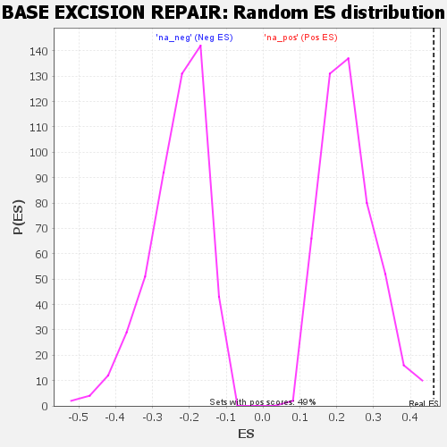

| | | Dataset | GSEA RNK clr Maaslin2 MucosalvsLuminal KO - Colon.rnk |
| Phenotype | NoPhenotypeAvailable |
| Upregulated in class | na_pos |
| GeneSet | BASE EXCISION REPAIR |
| Enrichment Score (ES) | 0.46307895 |
| Normalized Enrichment Score (NES) | 1.9883444 |
| Nominal p-value | 0.0 |
| FDR q-value | 0.021929616 |
| FWER p-Value | 0.259 |
Table: GSEA Results Summary
 Fig 1: Enrichment plot: BASE EXCISION REPAIR
Fig 1: Enrichment plot: BASE EXCISION REPAIR
Profile of the Running ES Score & Positions of GeneSet Members on the Rank Ordered List

Fig 2: BASE EXCISION REPAIR: Random ES distribution
Gene set null distribution of ES for BASE EXCISION REPAIR